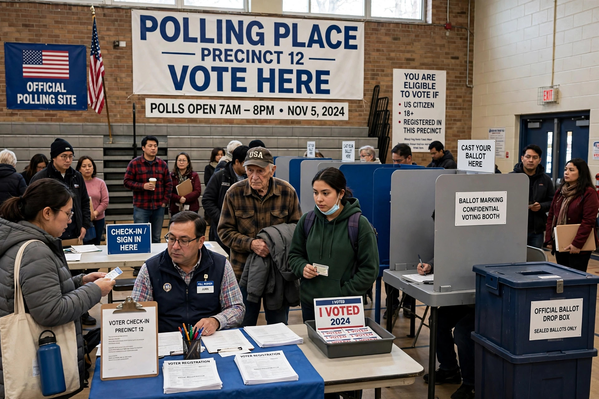

Felon disenfranchisement in the United States is the suspension or removal of voting rights from people convicted of felony crimes. Because election law is largely state law, the rules vary widely: some states restore rights automatically on release or completion of sentence, others require additional steps or a pardon, and a few have historically imposed lifetime bans for certain offences.

Maine, Vermont, and the District of Columbia allow people to vote even while incarcerated. Most states disenfranchise people in prison and many extend the ban through parole and probation. The Sentencing Project has estimated that several million Americans — around 4–5 million in recent elections — are disenfranchised because of a felony conviction, with a disproportionate impact on Black Americans rooted in the post-Reconstruction era, when such laws expanded alongside Jim Crow.
Florida's Amendment 4 (2018), approved by voters, restored rights to most people who completed their sentences, though subsequent legislation tied eligibility to payment of fines and fees, which courts and advocates have contested. The Supreme Court upheld the constitutionality of felon disenfranchisement in Richardson v. Ramirez (1974), relying on Section 2 of the Fourteenth Amendment.